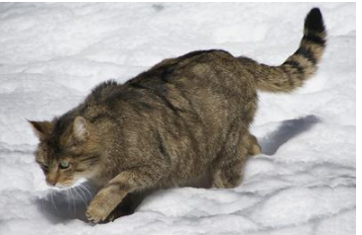

The Fauna of Forest Communities
This section explores the diverse and species-rich animal life of domestic forest communities. You will learn about large herbivores, small mammals, and forest birds, understanding how they interact directly with plant populations.
Large Herbivores & Mammals
🦌The herbivorous large game animals in our forests are mainly mammals. Wildlife management plays an important role in regulating their population sizes. Key species include:
- Red deer (Szarvas)
- Roe deer (Őz)
- Wild boar (Vaddisznó) - Highly prolific, omnivorous
- Fallow deer (Dámvad) - Introduced
- Mouflon (Muflon) - Introduced

Figure 49.1: Red deer

Figure 49.2: Mouflon

Figure 49.3: Wild Cat

Figure 49.4: Pheasant

Figure 49.5: Great Bustard
Small Mammals
🐿️Small herbivorous mammals show fascinating adaptations to survive the hardships of the food-scarce winter. Examples include:
-
🐁
Bank vole & Wood mouse:
Gather food reserves, remain active under leaf litter and snow.
-
🐿️
Squirrel:
Winter activity decreases significantly.
-
💤
Edible dormouse:
Fatten up in autumn and hibernate (sleep) through the entire winter.
Forest Birds
🐦Among the forest birds, there are relatively few true seed-eaters. Notable examples of these seed-eaters include the hawfinch (meggyvágó) and the common chaffinch (erdei pinty).